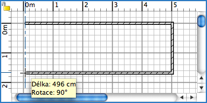

| Kreslení zdí | |||
Pro kreslení zdí zvolte Plán > Vytvořit zdi nebo vyberte nástroj Nakreslit zdi v plánu.
Klikněte do plánu projektu pro vytvoření výchozího bodu zdi, poté jedním nebo dvěma kliknutími v plánu pro vytvoření koncového bodu. Dokud nekliknete dvakrát nebo nestisknete klávesu Escape, každé další kliknutí určuje koncový bod aktuální zdi a počáteční bod nové zdi. Dokud kreslíte řadu zdí, počáteční bod první zdi bude připojen k existujícímu začátku nebo konci zdi, pokud na něj klikněte, a poslední zeď bude připojena k začátku nebo konci další zdi dvojklikem na tento bod. Body pro kliknutí jsou uprostřed šířky nakreslených zdí.  Vytváření zdí ukončíte buď přes nabídku Plán > Vybrat nebo zvolením nástroje Vybrat.
|
|